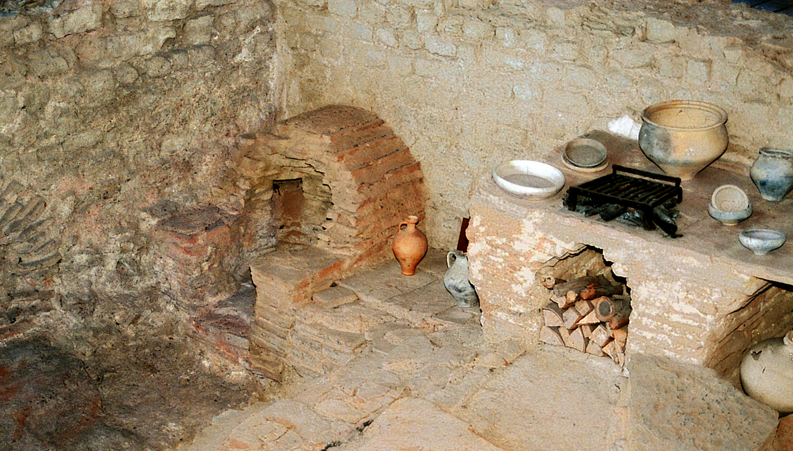
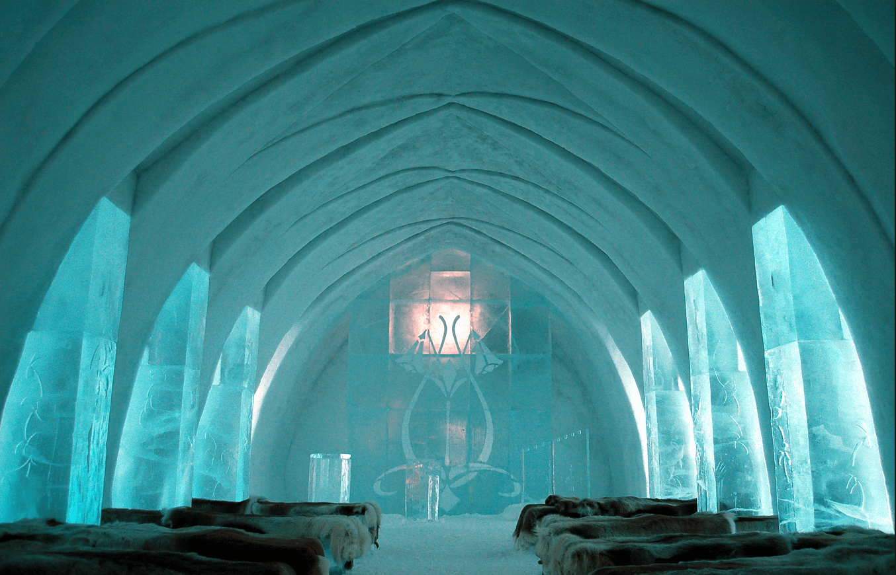

What is a Hotel??
For as long as we’ve had civilization we’ve had hotels, though the earliest iterations of the hotel were a little different than
they are today. In early biblical times, wandering travelers often took up lodging in the homes of local townsfolk. Though there
ere inns with several rooms (as evidenced in the Bible), most guest facilities were simply homes that “rented” out their stables
to passersby. They might’ve provided a meal or two, but guests tended to only stay the night and continued on with their travels
come morning.

Many early forms of the hotel were seen as brief respites from travel, as extended stays in locations outside of one’s hometown
were rare and often only conducted for business. In early Greek civilizations, many villages offered travelers facilities with
thermal baths so that they might rest their joints and muscles. Though they didn’t spend the night in these facilities, the baths
offered a much needed respite from the road. In Rome, government and high-ranking officials were treated to stays in gorgeous
mansions that offered baths, but also accommodations and food. Along early trade routes through the Middle East, large, stationed
aravans cropped up that would provide travelers safe stays in simple tented facilities.
The hotel industry as we know it today really got its start at the beginning of the 15th century when French law required that hotel
managers keep a register. English law quickly followed suit, and more than 500 inns began to crop up in the two countries. Hotels
became larger and often included a courtyard, which the bedrooms faced, as well as a kitchen and stables in the back for horses.
Hotels began to advertise their services with signage, from the 16th century, the first guidebooks began to appear detailing the
“Best of’s” in regards to hotel cleanliness and cuisine.

Up to the 21st century, hotel innovation continues to grow. We’ve seen the building of ice hotels, and an expansion of high-quality
affordable hotel lodgings for people from all different socio-economic backgrounds. The ease of bookings has also made for a hotel
boom of sorts, thanks in large part to technology. Online booking sites allow anyone to curate a unique and special travel experience
based on taste, location, and budget. It’s never been easier to access hotels, and the options are truly endless.